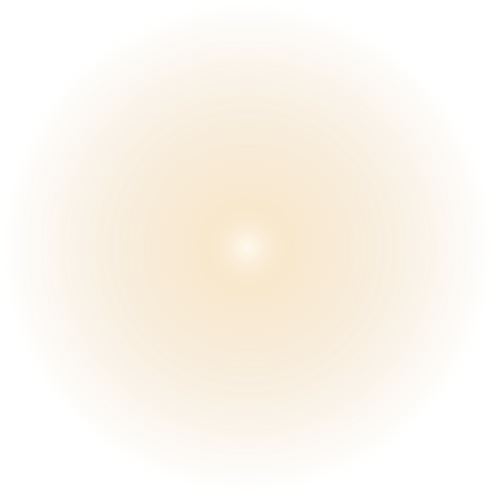

CATÁLOGO DE HANDOFF · PRÉVIA LOCAL
Presença, luz e profundidade.
Assets preservados, camadas independentes e uma coleção visual dos dez prêmios. Esta composição é demonstrativa e não substitui um mockup de site aprovado.

PRÉVIA DE CAMADAS · SEM REGRAS OU DATAS INVENTADASDez prêmios, uma linguagem visual.
Imagens ilustrativas. Marcas, modelos e composição dos prêmios serão confirmados pela organização.
Marca, realização e compartilhamento.
Pendências documentadas.
Cartela e campos reais, mockup Presença que Transforma, referência Advogado Premium, patrocinadores e fotos/especificações dos prêmios. A cartela não foi inventada.
Ler Handoff completo · Manifesto dos assets